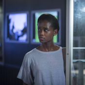
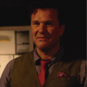
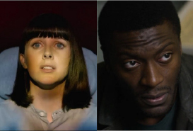
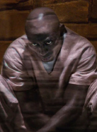

Personajes
Nish Leigh

Nish aparenta ser una mujer agradable que se siente de casualidad atraída por poder recorrer y escuchar las historias criminales del museo. Al final la historia da un giro por completo, Nish no se encuentra allí de casualidad, resulta ser una mujer muy vengativa.
Rolo Haynes

Rolo Haynes es el dueño del museo. Es un hombre bastante solitario,manipulador y un tanto extraño. Al comienzo del capítulo aparenta ser un hombre agradable pero al final resulta ser un hombre malvado que solo le desea el mal a las personas.
Peter
Peter es un médico reconocido en el ambiente neurológico, el cual se encuentra un tanto frustrado por no saber exactamente lo que sienten sus pacientes.
Jack y Carrie

Jack y Carrie son jovenes enamorados que forman una familia, pero Carrie queda en coma luego de un accidente y Jack gracias a Rolo logra colocarla dentro de su cabeza para que ella pueda seguir viviendo. Pero compartir la misma cabeza no es facil, Jack comienza a ponerla en pausa hasta que se agota y la coloca en un peluche.
Clayton

Clayton es el padre de Nish y es acusado de ser un criminal. Por confiar en Rolo se encuentra encerradoen el museo sufriendo de manera constante por culpa de las visitas que prenden la silla eléctrica donde se encuentra sentado el la mayor parte del tiempo.